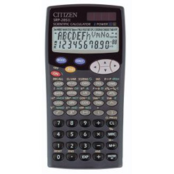

CITIZEN SRP-285II

SRP-285II是一部香港文憑試的准用計數機，除了會考所需要的基本功能外，亦內置簡單複數計算、基數計算、一元二次方程及聯立二元一次方程的程式，因此可以免卻輸入常用程式的麻煩，當然這部機亦有兩個算式的記憶，可以因應用家的需要而編寫出簡單的程式，所以這部計數是很適合 文憑試的使用。而售價亦比CASIO的會考計數便宜不少。
另外這部機還有物理常數、單位轉換、標凖常態分佈及 Process Capability 等等的功能。基數計算時，二進數有32位，八進數有11位，二進制、八進制、十進制及十六進制的數值範圍完全一致，由於電腦中進制以補數形式表示負數。對於計算電腦的32元位元(32 bits)問題會相當方便。較特別之處是計數機內部用24位有效數字來運算，所以凖確度較其它計數機高，不過可能是這個原因，所以運算速度就略為慢了一點。